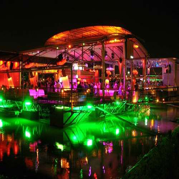

Noćni život u Beogradu
Beograd je grad koji nikada ne spava! Kao i preko dana, u gradu postoji bogat sadržaj i u noćnim satima. Veliki broj kafića, restorana i noćnih klubova privlači ljude da izađu u grad uveče, a svakodnevni sadržaji na otvorenom, pružaju zanimaciju onima koji više vole da provode vreme napolju.
Sa fontane na Slaviji, svakodnevno se
emituju razne vrste muzike, a preko noći,
fontana menja boje.
emituju razne vrste muzike, a preko noći,
fontana menja boje.

Hram Svetog Save noću se može videti iz
skoro svih delova grada.
skoro svih delova grada.
Knez Mihailova ulica je frekventna preko
noći isto kao i po danu.
noći isto kao i po danu.
Most na Adi noću svetli u različitim bojama.
Beograd je jedna od najpopularnijih
evropskih destinacija za doček Nove Godine
i svake godine dolazi veliki broj turista iz
celog sveta.
evropskih destinacija za doček Nove Godine
i svake godine dolazi veliki broj turista iz
celog sveta.

Trenutno je u izgradnji urbana četvrt
"Beograd na vodi" na obali Save.
"Beograd na vodi" na obali Save.
Pored sportskih događaja, u Beogradskoj
areni održavaju se i koncerti.
areni održavaju se i koncerti.

Noćni klubovi na splavovima svako veče
organizuju žurke i dobar provod.
organizuju žurke i dobar provod.
U Beogradu postoji veliki broj kafana
sa dobrom hranom i svirkama uživo.
sa dobrom hranom i svirkama uživo.